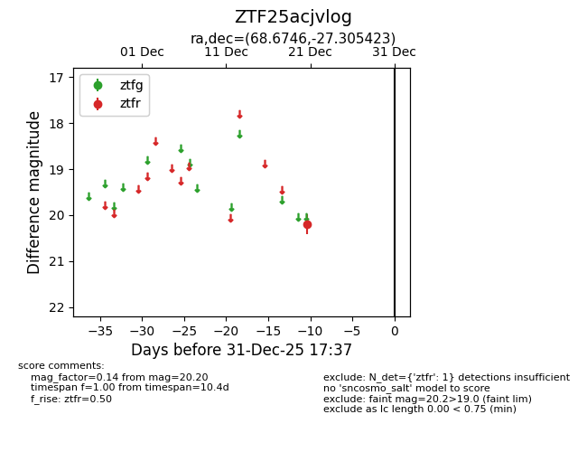
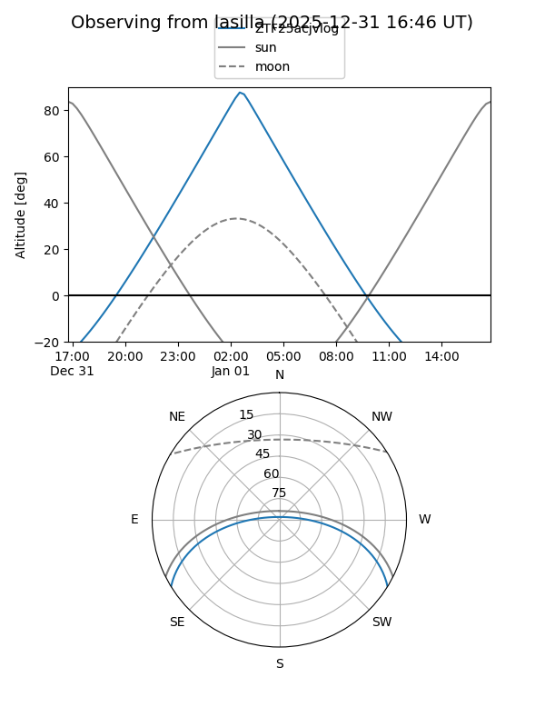
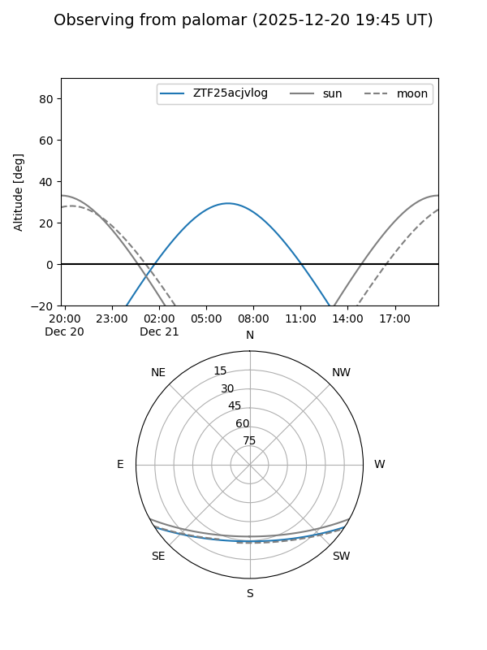

ZTF25acjvlog
Target ZTF25acjvlog at 2026-01-09 12:49
Aliases and brokers:
FINK: link
Lasair: link
ALeRCE: link
alt names
ZTF25acjvlog (ztf,fink_ztf)
Coordinates:
equatorial (ra, dec) = 68.6746,-27.30542
equatorial (HMS+DMS) = 04:34:41.91,-27:18:19.52
galactic (l, b) = (226.7369,-40.80668)
Flags:
Photometry:
last ztfr=20.20
1 ztfr detections
Lightcurve

Visibility


Additional plots